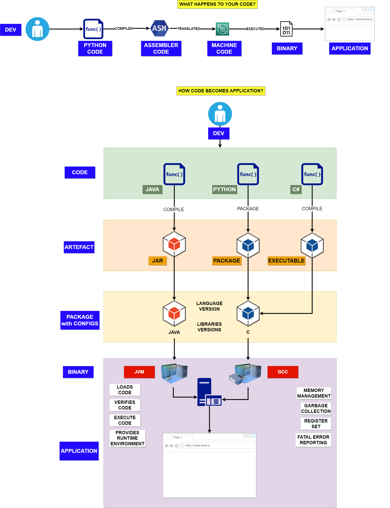
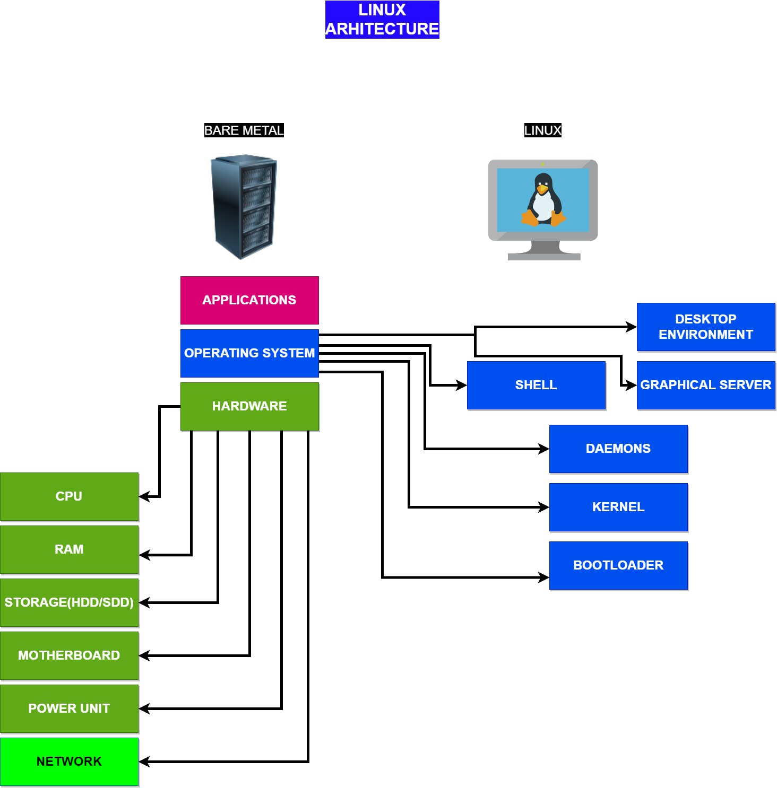

1. Environments
How code works
Note
Code is a set of instructions that a computer can understand and execute. It is written in a programming language, such as Python, Java, C++, etc. These languages provide a set of rules and syntax that programmers use to write their code.
When a programmer writes code, they are essentially creating a set of instructions that the computer will follow to perform a specific task. For example, a programmer may write code that tells a computer to display a message on the screen or to perform a calculation and return the result.
Once the code is written, it must be compiled or interpreted by a program called a compiler or interpreter. The compiler or interpreter takes the code written in the programming language and converts it into machine code, which is a set of instructions that the computer’s processor can understand and execute.
When the code is executed, the computer follows the instructions in the code, line by line. It performs the tasks specified in the code, such as displaying a message, performing calculations, or interacting with other parts of the system.
The code also interacts with the computer’s memory, where it stores and retrieves data. It also interacts with the computer’s input and output devices, such as the keyboard, mouse, and screen, allowing the user to interact with the code and receive feedback from the code.
The source code is translated into assembly language. The assembly code is translated into machine language. The machine language is directly executed as binary code.
{kind=link}
Microservices
Note
A microservice is a software architectural style in which a large application is built as a collection of small, independent services. Each service is focused on a specific business capability and communicates with other services through simple, well-defined interfaces. Microservices are designed to be loosely coupled, which means that they can be developed, deployed, and scaled independently of one another.
The main advantage of using microservices is that they allow teams to work on small, manageable pieces of the overall system, rather than one large monolithic codebase. This makes it easier to test, deploy, and scale each service independently, which can lead to faster development times and more reliable systems.
Microservices are typically built using a variety of technologies, and they are often deployed in containers or virtual machines. These services communicate with each other through APIs, which allows them to be written in different languages and run on different platforms.
Microservices also enable teams to use different languages, frameworks, and technologies for different services, making it easier for them to find the best fit for the specific requirement and make the development process more efficient.
In summary, a microservice is a small, independent service that focuses on a specific business capability, and communicates with other services through simple, well-defined interfaces. It is designed to be loosely coupled, which makes it easier to test, deploy, and scale independently, which can lead to faster development times and more reliable systems.
- Monolithic Architecture
All processes are tightly coupled and run as a single service. This means that if one process of the application experiences a spike in demand, the entire architecture must be scaled. Adding or improving a monolithic application’s features becomes more complex as the code base grows. This complexity limits experimentation and makes it difficult to implement new ideas. Monolithic architectures add risk for application availability because many dependent and tightly coupled processes increase the impact of a single process failure
- Microservices Architecture
With a microservices architecture, an application is built as independent components that run each application process as a service. These services communicate via a well-defined interface using lightweight APIs. Services are built for business capabilities and each service performs a single function. Because they are independently run, each service can be updated, deployed, and scaled to meet the demand for specific functions of an application.
{kind=link}
The main difference between a monolithic and microservice architecture is how the application is structured and how the different parts of the system interact with each other.
Monolithic architecture is tightly coupled, which means that all the components of the system are closely linked and depend on each other, making it harder to change or update one component without affecting the others. Microservice architecture is loosely coupled, which means that the services are independent of each other and can be updated or changed without impacting the other parts of the system.
- Microservices have several advantages over monolithic architecture:
They are easier to scale, as each service can be scaled independently.
They are easier to test, as each service can be tested in isolation.
They are easier to deploy, as each service can be deployed independently.
They are easier to maintain, as each service has a single responsibility and can be updated or changed without impacting the other parts of the system.
Hardware
bare metal vs virtual machine vs container vs pod vs cloud
What?
Bare metal (physical) refers to a physical server or computer that runs an operating system directly on the underlying hardware. It does not use virtualization or containerization technology. This allows for direct access to the hardware resources, but it also means that the server can only run one operating system and that the resources cannot be shared.
Virtual machine (VM) refers to a software-based simulation of a computer system that runs on top of a physical host. A virtual machine allows multiple operating systems to run on the same physical server, each with its own set of resources. VMs are isolated from each other and the host, which allows for better security and resource management, but it also means that they require more resources than running on bare metal.
Container refers to a lightweight, portable, and self-sufficient packaging of an application and its dependencies. Containers provide a consistent runtime environment, but they share the host operating system kernel, which makes them more lightweight and efficient than VMs. Containers are isolated from each other and the host, which allows for better security and resource management, but it also means that they require more resources than running on bare metal.
Pod is a higher-level concept in container orchestration, it is a group of one or more containers deployed together on the same host, and share the same network namespace. Pods allow multiple containers to share the same network and storage resources, and they can also be scheduled and managed together as a single unit.
Cloud refers to a type of computing that delivers on-demand computing resources, services, and applications over the internet, it allows users to access and manage their resources remotely through the use of a web browser or API. Cloud services are usually provided by third-party providers like Amazon Web Services, Microsoft Azure, and Google Cloud Platform. Cloud services can be divided into three main categories: Infrastructure as a Service (IaaS), Platform as a Service (PaaS), and Software as a Service (SaaS).
In summary, Bare metal (physical) is a physical server or computer that runs an operating system directly on the underlying hardware, Virtual Machine (VM) is a software-based simulation of a computer system that runs on top of a physical host, Container is a lightweight, portable, and self-sufficient packaging of an application and its dependencies and Pod is a higher-level concept in container orchestration.
How?
Environment |
|
|---|---|
bare metal |
1 data center, 1 physical machine, 1 OS, 1 Task |
virtual machine |
1 data center, 1 physical machine, multiple virtual machines, multiple OS, multiple tasks |
container |
1 data center, multiple physical machines, multiple virtual machines, multiple OS, multiple tasks |
cloud |
multiple data centers, multiple physical machines, multiple virtual machines, multiple OS, multiple tasks |
{kind=link}
Linux
Note
Linux is a community of open-source Unix-like operating systems that are based on the Linux Kernel. It was initially released by Linus Torvalds on September 17, 1991. It is a free and open-source operating system and the source code can be modified and distributed to anyone commercially or noncommercially under the GNU General Public License.
Initially, Linux was created for personal computers and gradually it was used in other machines like servers, mainframe computers, supercomputers, etc. Nowadays, Linux is also used in embedded systems like routers, automation controls, televisions, digital video recorders, video game consoles, smartwatches, etc. The biggest success of Linux is Android(operating system) it is based on the Linux kernel that is running on smartphones and tablets. Due to Android, Linux has the largest installed base of all general-purpose operating systems. Linux is generally packaged in a Linux distribution.
How Linux Works
Linux works by managing system resources, such as CPU, memory, and storage, and providing a platform for users to interact with the system using a command line interface or graphical user interface.
Uses a hierarchical file system, where files and directories are organized in a tree structure starting from the root directory. The Linux kernel, which is the core component of the operating system, is responsible for managing system resources and providing a bridge between applications and hardware.
Users can interact with the system by executing commands in a terminal or using graphical user interface applications. The system also supports multiple users and permissions, allowing users to access and modify files in the file system according to their assigned permissions.
Additionally, Linux has a large repository of open-source software and tools that can be easily installed and configured, making it a highly flexible and customizable operating system. Overall, Linux works by providing a robust and efficient platform for users to run applications, manage files and system resources, and interact with the system.
Components

The Bootloader - The software that manages the boot process of your computer. For most users, this will simply be a splash screen that pops up and eventually goes away to boot into the operating system
The kernel - This is the one piece of the whole that is called “Linux”. The kernel is the core of the system and manages the CPU, memory, and peripheral devices. The kernel is the “lowest” level of the OS. The Linux kernel is a set of drivers that are written to allow your hardware to talk to each other and to allow your software to talk to the hardware, you can think of the kernel as a translator between all components in your system. The Linux kernel was originally developed by Linux Torvalds in 1991 and is still developed by him and a group of talented developers. The Linux kernel is currently built by many hobbyist developers and commercial developers from various organizations worldwide. The current leadership development (and this website) is funded by the Linux Foundation, The Linux Foundation’s members are individual companies that widely use Linux-based systems and fund much of the current development and hosting necessary to keep the Linux kernel and related programs active.
Daemons - These are background services, network, sound, scheduling, etc, that either start up during boot or after you log into the desktop
The Shell - You have probably heard mention of the Linux command line. This is the shell - a command process that allows you to control the computer via commands typed into a text interface.
Graphical Server - This is the sub-system that displays the graphics on your monitor. It is commonly referred to as the X server or just “X”
Desktop Environment - This is the piece of the puzzle that the users interact with. There are many desktop environments to choose from (Unity, GNOME, Cinnamon, Enlightenment, KDE, XFCE, etc). Each desktop environment includes built-in applications (such as file managers, configuration tools, web browsers, games, etc)
Applications - Desktop environments do not offer the full array of apps. Just like Windows and Mac, Linux offers thousands upon thousands of high-quality software titles that can be easily found and installed. Most modern Linux distributions (more on this in a moment) include App Store-like tools that centralize and simplify application installation.
{kind=link}
Linux Distributions
A Linux distribution is a set of software such as core libraries, Window Managers, Server daemon processes, and user-based applications. The specific sets of software that are included in a Linux-based distribution are decided by the distribution maintainers based on their goals, their goal distribution may be security-oriented, user-friendly, server-based, mobile phone-based, etc.

For more information go to List of Linux distributions
Terminal Emulator
Note
A terminal emulator is a program that allows the use of the terminal in a graphical environment. As most people use an OS with a graphical user interface (GUI) for their day-to-day computing needs, the use of a terminal emulator is a necessity for most Linux server users.
Commonly-used terminal emulators by operating systems:
Mac OS X: Terminal (default), iTerm 2
Windows: MobaXTerm, VS Code Terminal, Windows Terminal, PuTTy
Linux: Gnome Terminal, Konsole, XTerm
The Shell
In a Linux system, the shell is a command-line interface that interprets a user’s commands and script files and tells the server’s operating system what to do with them.
We will use the Bourne-Again shell (bash).
linux_user@linux_machine:/$ sudo su
root@linux_machine:/#
# The **“@” **symbol is used to divide the login user i.e. ``linux_user`` and the hostname i.e. ``linux_machine``.
# The **“:” **symbol (colon) is used to separate the ``linux_machine`` as a hostname from the current login or working directory.
# The **“$”** symbol will represent that it is a normal user, and does not have superuser rights. The login user is not a superuser.
# The **“#”** symbol will represent that it is a superuser, and it is having all the superuser rights.